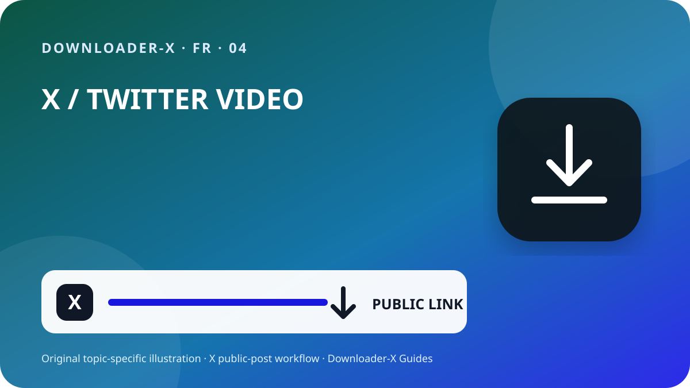

Réponse rapide
comment télécharger une vidéo twitter — Ouvrez la publication X individuelle qui contient la vidéo, vérifiez qu’elle est publique, puis utilisez le menu Partager pour copier le lien de la publication. Collez cette URL dans Downloader-X, sélectionnez une variante MP4 réellement affichée et lisez le début, le milieu et la fin après l’enregistrement. Utilisez cette méthode uniquement pour vos vidéos, un média sous licence compatible ou un contenu dont le propriétaire vous a donné l’autorisation. Un traitement de lien public ne doit demander ni mot de passe X, ni code, ni cookie, ni accès distant.

Trois étapes avec Downloader-X
- Le lien doit identifier une seule publication qui contient la vidéo. Dans X, ouvrez Partager et copiez le lien de la publication, puis testez-le une fois dans un nouvel onglet. Une URL de profil ou de fil contient plusieurs éléments et ne désigne pas le bon média. Cette vérification distingue une mauvaise adresse d’une panne du service et limite les clics répétés qui créent des fichiers incomplets ou en double.
- Collez l’URL vérifiée dans le téléchargeur X et lancez l’analyse une seule fois. Attendez les options réelles, puis comparez le titre ou l’aperçu avec la publication d’origine. Sélectionnez uniquement les formats et résolutions effectivement affichés. Ne prenez pas une promesse 4K, 1080p ou sans filigrane pour une capacité réelle lorsque la source ne l’offre pas. En cas d’échec, un message clair doit apparaître; une page HTML, un installateur ou un mauvais fichier ne doit jamais être présenté comme une vidéo réussie.
- La tâche est terminée quand le fichier s’ouvre comme une vraie vidéo, pas lorsque la barre de progression disparaît. Avant archivage ou partage, contrôlez :
Ce que signifie cette recherche
comment télécharger une vidéo twitter. Publications publiques uniquement. Le format et la qualité dépendent des options réellement fournies par la source.
1. Vérifier l’accès public et le droit d’utilisation
Partez de la publication originale, et non d’un profil, d’une recherche, d’une capture ou d’un aperçu transféré. Ouvrez l’URL dans un nouvel onglet et comparez le compte, le texte, la miniature et la durée. Une publication visible publiquement indique un accès, pas une autorisation automatique de republier, modifier, vendre ou exploiter en publicité. Si le compte est protégé, la publication supprimée, l’accès spécial ou une restriction nécessaire, arrêtez-vous et demandez une copie autorisée au propriétaire au lieu de contourner le contrôle.
La visibilité publique est un réglage d’accès, pas une licence. Enregistrez vos vidéos, un média sous licence compatible ou un contenu clairement autorisé. Pour republier, modifier ou exploiter commercialement, vérifiez que l’accord couvre cet usage et gardez une preuve écrite. Respectez les personnes filmées, les informations privées, les lieux sensibles et les mineurs, et ne présentez jamais le travail d’autrui comme le vôtre.
2. Copier l’URL exacte de la publication
Le lien doit identifier une seule publication qui contient la vidéo. Dans X, ouvrez Partager et copiez le lien de la publication, puis testez-le une fois dans un nouvel onglet. Une URL de profil ou de fil contient plusieurs éléments et ne désigne pas le bon média. Cette vérification distingue une mauvaise adresse d’une panne du service et limite les clics répétés qui créent des fichiers incomplets ou en double.
Ouvrez la publication vidéo originale dans sa page individuelle.
Utilisez Partager pour copier le lien sans saisir l’URL à la main.
Vérifiez le domaine x.com ou twitter.com et l’adresse de publication.
Testez dans un nouvel onglet et comparez compte, texte, miniature et vidéo.
Conservez l’URL source et la preuve d’autorisation avec le fichier.
3. Coller le lien et choisir uniquement le résultat réel
Collez l’URL vérifiée dans le téléchargeur X et lancez l’analyse une seule fois. Attendez les options réelles, puis comparez le titre ou l’aperçu avec la publication d’origine. Sélectionnez uniquement les formats et résolutions effectivement affichés. Ne prenez pas une promesse 4K, 1080p ou sans filigrane pour une capacité réelle lorsque la source ne l’offre pas. En cas d’échec, un message clair doit apparaître; une page HTML, un installateur ou un mauvais fichier ne doit jamais être présenté comme une vidéo réussie.
4. Choisir la HD selon la source et l’usage
Une étiquette HD n’est fiable que si elle correspond à une variante réellement disponible dans la publication publique. Sur téléphone et ordinateur portable, 720p offre souvent un bon équilibre entre netteté, données et stockage. 1080p convient aux grands écrans lorsque la source le propose effectivement. Deux fichiers de même résolution peuvent avoir un débit, un codec et une compression différents; il faut donc les lire plutôt que se fier au nom. Si le son est nécessaire, choisissez une option combinant vidéo et audio et vérifiez la piste immédiatement après l’enregistrement.
5. Enregistrer sur iPhone, Android, Windows ou Mac
Sur iPhone et iPad, les téléchargements Safari se trouvent généralement dans l’app Fichiers, le dossier Téléchargements ou l’emplacement configuré. Sur Android, consultez la liste du navigateur ou l’application Files. Sur Windows, macOS, Linux et ChromeOS, vérifiez le dossier Téléchargements et l’historique avant de cliquer à nouveau. Si l’espace manque, supprimez les copies inutiles ou choisissez une résolution inférieure. N’installez pas un gestionnaire inconnu parce qu’une page affirme qu’il est obligatoire.
6. Vérifier le fichier enregistré
La tâche est terminée quand le fichier s’ouvre comme une vraie vidéo, pas lorsque la barre de progression disparaît. Avant archivage ou partage, contrôlez :
Le type correspond au choix, par exemple MP4, et non HTML ou un installateur.
La taille n’est pas nulle et reste cohérente avec la durée et la qualité.
Le début, le milieu et la fin lisent correctement image, durée et son.
Le nom, le dossier, l’URL source et l’autorisation sont documentés.
Documenter la source avant la conservation
Pour un projet de plusieurs clips, notez le compte, la date, l’URL permanente, une description, la variante, la taille et le fondement de l’autorisation. Cela évite les fichiers sans provenance et facilite la vérification du crédit ou de la licence. Dans une citation, une réponse ou un fil, copiez l’URL de la publication qui contient réellement la vidéo, pas celle qui la mentionne ou la cite seulement.
Dépanner de la source vers le fichier
Revenez à la publication vidéo et copiez via Partager; le profil ne désigne pas un média précis.
Le contenu peut être protégé ou limité. Ne donnez ni identifiants ni cookies; demandez une copie autorisée.
Confirmez que la publication existe, contient une vidéo native et s’ouvre avec l’URL, puis actualisez une fois.
Supprimez le fichier, ne changez pas son extension et recommencez la vérification du lien et de l’option vidéo.
Vérifiez la source, le volume et un autre lecteur fiable; choisissez une variante combinée si nécessaire.
Sécurité et confidentialité
Un flux de lien public ne requiert pas de mot de passe X, de code à deux facteurs, de cookie exporté, de contrôle distant, d’exécutable ni de désactivation de la protection. Arrêtez si une page fournit un .exe, .dmg ou une extension sans rapport. Vérifiez le domaine, le type et l’origine avant d’ouvrir. Sur un appareil partagé, déplacez les fichiers autorisés hors des dossiers publics et supprimez les copies temporaires inutiles.
Organiser les fichiers et éviter les doublons
Utilisez un nom avec sujet court, compte, date et qualité, par exemple topic_creator_2026-08-30_720p.mp4. Séparez les dossiers temporaires et vérifiés, puis gardez uniquement les variantes nécessaires. Cliquer plusieurs fois n’améliore pas l’image et crée souvent un double ou un fichier partiel. Conservez l’URL, le crédit et les conditions d’usage dans une note ou un tableau du projet.
Liste finale de 60 secondes
Elle est publique sans contourner un contrôle.
Vous possédez le média ou avez l’autorisation.
Le service ne demande ni identifiants ni cookies.
La qualité sélectionnée figure dans le résultat réel.
Le type et la taille du fichier sont cohérents.
L’image et le son se lisent entièrement.
La source et le crédit sont enregistrés.
Vérifications pour éviter un mauvais résultat
Guide pratique de X · 1
Une étiquette HD n’est fiable que si elle correspond à une variante réellement disponible dans la publication publique. Sur téléphone et ordinateur portable, 720p offre souvent un bon équilibre entre netteté, données et stockage. 1080p convient aux grands écrans lorsque la source le propose effectivement. Deux fichiers de même résolution peuvent avoir un débit, un codec et une compression différents; il faut donc les lire plutôt que se fier au nom. Si le son est nécessaire, choisissez une option combinant vidéo et audio et vérifiez la piste immédiatement après l’enregistrement.
Pas automatiquement. Il faut une licence ou une autorisation couvrant la redistribution.
Questions fréquentes
comment télécharger une vidéo twitter?
Publications publiques uniquement. Le format et la qualité dépendent des options réellement fournies par la source.
Où est le fichier sur iPhone?
Généralement dans l’app Fichiers, Téléchargements ou l’emplacement choisi dans Safari.
Que faire si je reçois du HTML?
Supprimez-le, ne le renommez pas et vérifiez de nouveau l’URL et l’option vidéo.
Peut-on télécharger un compte protégé?
Non. Ce guide concerne les publications publiques et ne contourne aucune restriction.
Une publication publique peut-elle être republiée?
Pas automatiquement. Il faut une licence ou une autorisation couvrant la redistribution.
Guides X associés
Utilisez le lien exact de la publication publique
Publications publiques uniquement. Le format et la qualité dépendent des options réellement fournies par la source.
Ouvrir Downloader-X